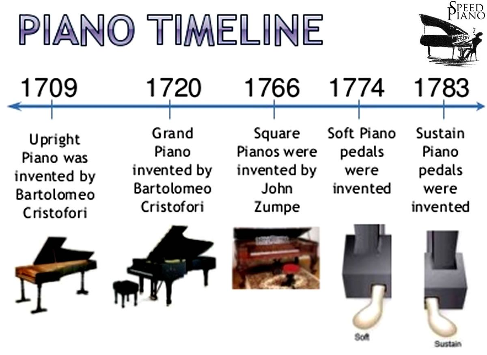

<h1>Four key milestones in the history of the calculator:
    <h2>The first calculators were mechanical:</h2>
    <ul>
        <li>The Abacus was first used in 2000 BC</li>
        <li>The Slide Rule was invented in the 17th century by William Oughtred, and used the sum and difference of logs to divide and subtract faster (used until 1980s).</li>
        <li>Wilhelm Schickard invents the first “adding machine” in 1623 (not popular until the 1850s).</li>
    </ul>